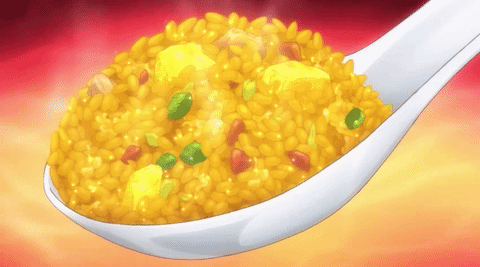

Fried rice if nothing feels nice
When you feel bored with normal rice, make an egg fried rice
Ingredients:
- Rice
- Egg
- Garlic
- Onion
- Bell Pepper
- Oil
- Salt
- Pepper
Steps
- Chop all the garlic, onion and bell pepper
- Heat up a wok and add some oil
- Saute the garlic onion and bell peppers
- Crack the eggs and add it on the pan together with the other ingredients
- Once properly sauted and when the eggs are perfectly scrambled add the rice
- Add salt and pepper to taste
- Keep mixing for about 10 minutes, then remove from heat
- Serve fast and eat like its your last
Return to top
Return to main page